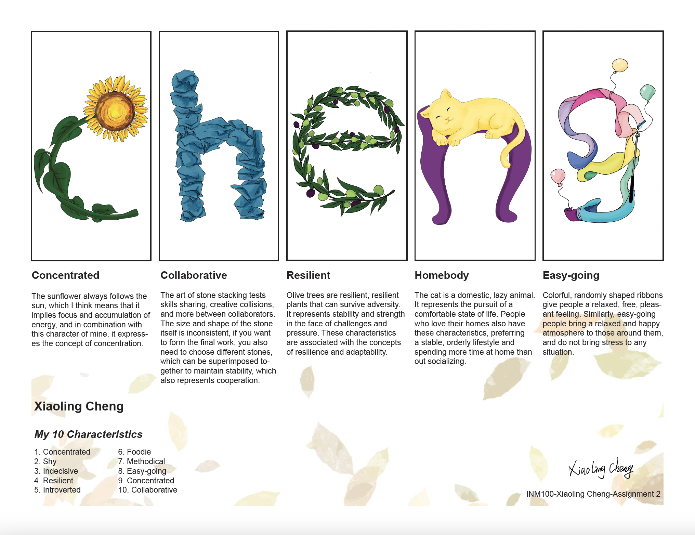
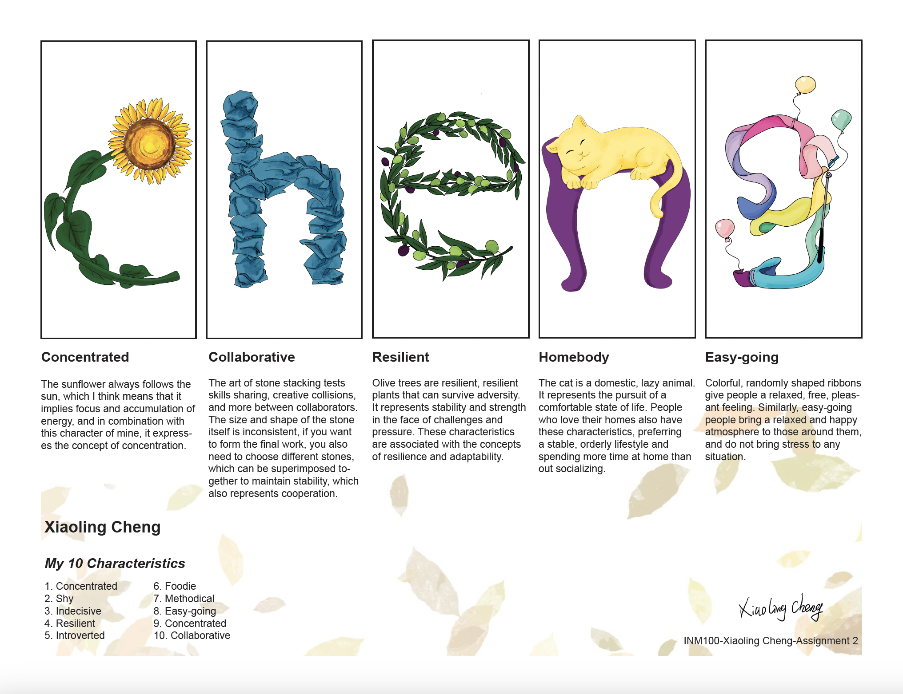

Hello, I'm Xiaoling.
A Multifaceted Designer!
My family and I live in Toronto.
I am currently studying web development design, various design software,
and design principles in the Interaction Design major at Seneca.
I once studied sketch, color, interior design and illustration design in the interior design major of China University of Geosciences.
I am active in children's art education, children's book illustration, and the creation of various handmade artworks.
For me, nature is the source of the best inspiration.


 
